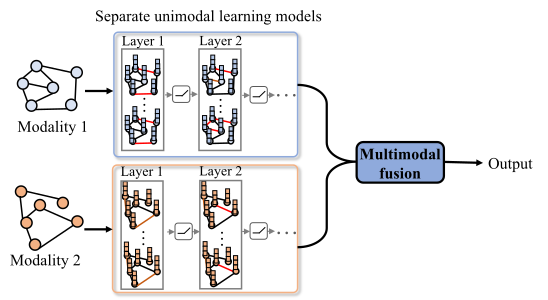
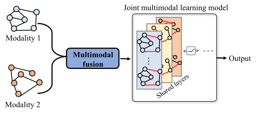
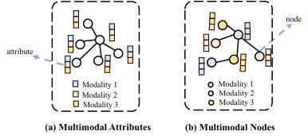

Multimodal Graph Learning
Multimodal Graph Learning
Data in real-world scenarios often come from different sources. Multimodal fusion aims to integrate information from diverse data sources, such as visual, textual, and acoustic data. However, multimodal data often exhibits intricate relational dependencies, including both inter-modal and intra-modal correlations. Traditional multimodal learning methods that rely on basic modality alignment and simple fusion techniques often fail to effectively capture and integrate the rich, complementary information across different modalities. To address this challenge, multimodal graph learning has emerged as a powerful approach [225, 68, 226, 227]. It leverages graph structures to model and learn the intricate inter-modal and intra-modal correlations, enabling a more nuanced integration of multimodal data.
Compared to other types of multimodal learning, where data typically follows a consistent and well-defined structure, multimodal graph learning deals with the challenge of processing and fusing data with complex and heterogeneous graph topologies. This complexity is further amplified when the graph structure varies between different modalities. As a result, numerous studies have been proposed to address these challenges in multimodal graph learning, targeting a wide range of tasks such as recommendation, medical diagnosis, and knowledge graph completion [228, 229, 230, 231]. According to the structural characteristics of multimodal data, we classify multimodal graph learning into two categories: graph-driven multimodal learning and learning on multimodal graphs. Section 2 and Section 3 will explore these approaches in detail.
Graph-driven Multimodal Learning
In graph-driven multimodal learning, data from each modality is represented as unimodal graphs (e.g., textual graphs, visual graphs). Various graph learning models are applied to process these graphs, facilitating multimodal fusion. Based on the fusion strategy, graph-driven multimodal learning can be categorized into two types: separate unimodal learning and joint multimodal learning. Table 4.1 lists recent representative graph-driven multimodal learning methods.
| Type | Method | Model | Description |
|---|---|---|---|
| Separate / Unimodal / Learning | [232] | Gated Attention-Graph Neural Network | Textual and Visual User-Item Graphs |
| [234] | Graph Transformer | Textual and Visual Knowledge Graphs | |
| [237] | Graph Contrastive Learning | Hierarchical Textual, Visual, Acoustic Graphs | |
| [236] | Graph Contrastive Learning | Textual and Visual User-Item Graphs | |
| [233] | Hypergraph Embedding | Textual and Visual User-Item Graphs | |
| [235] | Out-of-distribution Generalized Multimodal Graph Neural Network | Textual and Visual Graphs | |
| Joint / Multimodal / Learning | [238] | Shared Graph Neural Network | Textual and Visual Graphs |
| [239] | Multimodal Phenotypic Graph Diffusion | Multimodal Brain Graphs | |
| [240] | Spatio-Temporal Graph Convolution | Inter-industry, Inter-company, Inter-day Graphs | |
| [241] | Hypergraph Attention Networks | Textual and Visual Symbolic Graphs | |
| [242] | Graph Transformer | Structural and Functional Brain Graphs | |
| [243] | Graph Transformer | Textual, Semantic, Dense Region Graphs | |
| [244] | Cross-Graph Transformer | Gene Graphs |
Separate Unimodal Learning
Separate unimodal learning involves the use of distinct graph learning architectures, each tailored to a specific data modality. The outputs from these architectures are then aggregated to achieve multimodal fusion. In other words, separate unimodal learning first handles each modality independently and then performs the fusion of the modalities (see Figure 4.1). Given \(m\) graphs, each corresponding to a modality, the graph for modality \(i\) is denoted as \(\mathcal{G}_i\). The process of separate unimodal learning is as:

Modality-specific Representation. Separate unimodal learning exhibits the advantage of capturing modality-specific representation. Specifically, the modality-specific representation \(\mathbf{Z}_i\) for the modality \(i\) can be effectively extracted using various independent graph learning models. For example, MGAT [232] applies embedding propagation layers to perform message passing on each single-modal user item graph, capturing user preferences on each modality. [233] proposed local and global graph learning-guided multimodal recommender (LGMRec) for learning on multimodal user-item graphs. It introduces a local graph embedding module to perform message propagation on textual and visual user-item graphs separately, capturing intra-modal local user interests and generating modality-specific representations. MKGformer [234] is a hybrid Transformer model designed for the multimodal knowledge graph completion task. In MKGformer, two types of knowledge graph are constructed: visual knowledge graphs and textual knowledge graphs. A visual Transformer and a textual Transformer, both equipped with self-attention modules, are then applied to these knowledge graphs to learn modality-specific representations.
Multimodal Fusion. After obtaining modality-specific representations of all modalities, multimodal fusion operation \(Fusion (\cdot)\) is applied to integrate them.
Typical fusion methods: Three typical fusion operations, including concatenation, summation, and element-wise multiplication, are widely adopted for multimodal fusion. Concatenation concatenates the representations of each modality along a specified dimension, creating a unified representation that preserves all the features of the individual modality. It is denoted as: \(\mathbf{\hat{Z}} = \mathbf{Z}_1\oplus\mathbf{Z}_2\oplus, \dots, \oplus\mathbf{Z}_m\). Summation aggregates the multimodal representations by summing them element-wise, denoted as: \(\mathbf{\hat{Z}} = \sum_{i=1}^m \mathbf{Z}_i\). Element-wise multiplication captures interactions between modalities at each feature dimension, denoted as: \(\mathbf{\hat{Z}} = \prod_{i=1}^m \mathbf{Z}_i\).
Global learning module: Many studies apply a global learning module to fuse multimodal representations generated by separate learning models, aiming to enhance overall feature integration. For example, LGMRec [233] designs a global hypergraph embedding module to model global cross-modality dependency relations of modality-specific representations produced by multiple local graph embedding modules. OMG-NAS [235] maintains global weights across learning architectures for all modalities and fuses multimodal information.
Attention-based fusion: Some studies apply attention mechanisms, such as cross-attention, on multimodal representations, capturing cross-modality interactions. For instance, MGAT [232] leverages gated attention to aggregate information across multiple modalities.
Contrastive learning-based fusion: Some works present multimodal graph contrastive learning frameworks. These frameworks apply a contrastive objective strategy to capture inter-modal and intra-modal similarities and differences, enabling multimodal fusion. For example, [236] proposed MGCL-RA, which presents a contrastive loss of cross-modality to capture similarities between visual and textual modalities. [237] presented a hierarchical graph contrastive learning (HGraph-CL) framework for multimodal sentiment analysis. It explores sentiment relations across different modalities, employing a graph contrastive learning strategy at the inter-modal level.
Due to independent learning in each modality, the unimodal representations obtained from unimodal architectures are highly modality specific, preserving the unique characteristics of each modality. Therefore, separate unimodal learning can fully encode intra-modal correlations and effectively protect modality-specific information during the fusion process.
Joint Multimodal Learning
Joint multimodal learning first exploits a multimodal fusion step to integrate various graphs. Then, an all-in-one multimodal architecture, which includes shared representation layers and processes the fused multimodal information (see Figure 4.2). Unlike separate unimodal learning, joint multimodal learning first performs graph fusion and then conducts the learning process. Formally, the process of joint multimodal learning can be expressed as:

Inter-modal Correlation Modeling. By integrating multimodal graphs into a shared representation space, the joint learning process \(Join(\cdot)\) can effectively model inter-modal correlations. [238] proposed a multimodal graph network (MGN) architecture that includes a graph parser and a graph matcher. In the graph parser, they employed a two-layer graph isomorphism network to learn from two multimodal graphs: textual graphs and visual graphs. Subsequently, in the graph matcher, a shared graph neural network is utilized to learn from the multimodal representations. [239] designed a unified multimodal phenotypic graph diffusion method to process multimodal brain graphs, capturing inter-modal correlations between different brain graphs (e.g., brain structural graphs and brain functional graphs).
Some works focus on dynamic graphs. For example, Melody-GCN [240] is a multimodal dynamic graph convolutional network designed for stock price prediction tasks. This model specifically addresses three types of graphs, including inter-industry graphs, inter-company graphs, and inter-day graphs. Melody-GCN introduces a multimodal fusing-diffusing block to effectively fuse multimodal representations, enhancing the model’s ability to capture temporal dependencies and interactions.
With a strong relation modeling ability, such as cross-modality relation modeling, the attention mechanism is particularly representative for joint multimodal learning. [241] proposed a hypergraph attention network for integrating symbolic information extracted from multimodal symbolic graphs, specifically textual and visual graphs. They developed a semantic similarity measurement-based co-attention mapping function to facilitate the fusion of multimodal information. Graph transformers have gained significant attention because of their ability to effectively capture complex dependencies within graphs. Consequently, many studies have applied multimodal graph transformers to achieve joint multimodal learning. For example, GTGL [242] is a graph transformer geometric learning framework to learn on multimodal brain graphs. GTGL implements a graph transformer network with the multi-head self-attention mechanism to jointly learn structural and functional brain graphs. [243] developed a multimodal graph transformer that incorporates a graph-involved, plug-and-play quasi-attention mechanism for multimodal fusion. Their model operates on three types of graphs, including textual graphs, semantic graphs, and dense region graphs. Specifically, they set a cross-modal mask as an all-zero matrix to learn cross-attention between multimodal features. Moreover, MuSe-GNN [244], which features a cross-graph Transformer architecture, is proposed for multimodal biological data integration from gene graphs. In the cross-graph Transformer, a graph neural network is integrated with a multi-head self-attention module, incorporating co-expression information to obtain multimodal gene representations. This design enhances the ability to capture relationships across different gene modalities and improves the quality of multimodal biological data fusion.
Different from separate unimodal learning, joint multimodal learning models have a unified learning framework for all modalities. Shared layers can simultaneously process graphs from multiple modalities and obtain multimodal representations. Therefore, joint multimodal learning models are relatively lightweight, with low computational complexity. Furthermore, by processing multimodal graphs in a unified manner, joint multimodal learning has the advantage of capturing inter-modal correlations more effectively.
Learning on Multimodal Graphs
Learning on multimodal graphs refers to applying graph learning models to multimodal graphs, where multimodal information from different sources is integrated into a unified graph structure. This approach allows for the simultaneous processing of inter-modal and intra-modal relations within a single graph representation. According to the integration manner of multimodal information, multimodal graphs can be divided into two types: graphs with multimodal attributes and graphs with multimodal nodes. Figure 4.3 illustrates examples of these two multimodal graph types, and Table 4.2 lists recent representative methods for each type.

| Type | Method | Model | Description |
|---|---|---|---|
| Learning on / Multimodal / Attributes | [245] | Graph Complete Network | Multimodal Conversational Interactions |
| [246] | Graph Convolutional Network | Multimodal Brain Graphs | |
| [251] | Heterogeneous Graph Neural Network | Heterogeneous Recipe Graphs | |
| [248] | Graph Transformer | Multimodal Knowledge Graphs | |
| [249] | Graph Contrastive Learning | Multimodal Knowledge Graphs | |
| [250] | Graph Contrastive Learning | Multimodal Conversational Interactions | |
| [503] | Relational Transformation | Textual and Visual Knowledge Graphs | |
| [247] | Graph Convolutional Network | Textual, Visual, Acoustic Graphs | |
| [252] | Graph Variational Auto-Encoder | Textual and Visual Item-Item Graphs | |
| [253] | Spectrum-based Graph Learning | Textual, Visual, Acoustic Graphs | |
| Learning on / Multimodal / Nodes | [255] | Graph Convolutional Network | Multimodal Knowledge Graphs |
| [258] | Cell-feature Graph Convolution | Cell-feature Graphs | |
| [259] | Graph Fusion Neural Network | Freezing of Gait Graphs | |
| [257] | Hypergraph Convolutional Network | Multimodal Knowledge Hypergraphs | |
| [500] | Junction Tree Encoder-Decoder | Molecular Graphs | |
| [256] | Graph Neural Network | Multimodal Drug Knowledge Graphs | |
| [254] | Graph Convolutional Network | Multimodal Knowledge Graphs | |
| [260] | Graph Convolutional Network | Textual and Visual User-Item Graphs | |
| [261] | Adaptive Interactive Graph Network | Multimodal Conversational Interactions |
Learning on Multimodal Attributes
In graphs with multimodal attributes, the features of each node consist of multiple modalities (see Figure 4.3 (a)). Notably, these graphs can only be constructed when data from each modality shares the same underlying graph structure. Thus, a graph with \(n\) types of multimodal attributes can be viewed as \(n\) structurally consistent unimodal graphs, each representing a single modality. For example, a graph where nodes have attributes from 3 modalities can be decomposed into 3 unimodal graphs, all maintaining the same structure across the modalities. Formally, a graph with multimodal attributes can be expressed as:
Multimodal graph convolutional networks are typical models for learning on multimodal attributes. For example, [245] proposed GCNet (a graph convolutional network-based graph complete model) for the conversation completion task. In GCNet, multimodal graphs are constructed based on conversation contents, incorporating modalities such as text and images. Each node in the graph contains multimodal features, though some features may be incomplete due to missing modalities. Then, the authors used a relational graph convolutional network to aggregate neighborhood information, enabling more advanced conversation understanding despite incomplete data. [246] propose a multicenter and multichannel pooling-based graph convolutional network for multimodal brain graph learning. For each brain region, they integrated information extracted from multimodal brain imaging data and used it as the feature vector for the brain region. A multimodal brain graph is then constructed, where nodes represent different brain regions. To effectively process this graph, the authors introduce a multicenter attention mechanism and multichannel pooling within the graph convolutional network. More recently, [247] proposed a method to fuse multimodal features into node attributes. They present an MGLRA (masked graph learning with a recurrent alignment) model, which aims to iteratively refine unimodal representations from multiple modalities. The model first employs a graph convolutional network with a random masking mechanism to facilitate multimodal fusion. Particularly, a cross-modal multi-head attention mechanism is then introduced to learn from the constructed graphs, effectively capturing interactive semantic information across modalities.
Transformer-based and contrastive learning-based methods also attract great attention for learning on multimodal attributes. MarT [248] is a Transformer model for multimodal analogical reasoning over knowledge graphs. The authors constructed a multimodal knowledge graph (MarKG), where each entity possesses multimodal attributes. This enables the model to reason over relations and analogies between entities across different modalities. [249] designed an MSNEA (multimodal siamese network for entity alignment) framework for entity alignment in multimodal knowledge graphs. They first fused entity features from three different modalities, including visual, relational, and attribute modalities, to gain multimodal entity representations. Subsequently, they present a multimodal contrastive learning module to achieve inter-modal enhancement fusion and avoid the overwhelming impact of weak modalities. To address the multimodal emotion recognition task, [250] proposed a joint modality fusion-based graph contrastive learning method. Specifically, they designed a multimodal fusion mechanism to construct multimodal graphs, where each node contains both unimodal-specific features and global contextual features, enabling a comprehensive information integration from different modalities.
In addition, some other graph learning models are widely proposed for learning on multimodal attributes. [251] introduced a multimodal recipe representation learning model, Recipe2Vec, which leverages a heterogeneous graph neural network to embed multimodal information. They constructed heterogeneous recipe graphs by fusing visual, textual, and relational information as node attributes. DGVAE [252] converts the visual and textual information of items into consistent embeddings, which are then used to construct item-item graphs where items are represented as nodes. To reconstruct the users’ rating matrix and their textual preferences, DGVAE inputs the word vectors and rating vectors into the graph encoder independently. This approach captures multimodal information to enhance the effectiveness of multimodal recommendations. 3D-HaarFrame [253] is a multimodal graph learning model designed for student engagement prediction. It captures inter-modal correlations within textual, visual, and acoustic data by embedding the multimodal information into a unified graph. The model then applies spectrum-based graph learning to decompose the graph into a set of coefficients at different scales and orientations, efficiently compacting the multimodal representations for improved prediction accuracy.
Learning on Multimodal Nodes
Graphs with multimodal nodes consist of nodes derived from different modalities (see Figure 4.3 (b)). Each node represents a unimodal entity, featuring attributes from a single modality. In these graphs, edges signify either inter-modal or intra-modal correlations. For instance, an edge connecting two nodes from different modalities represents the inter-modal correlation between them. As a result, learning on multimodal nodes is more effective in modeling inter-modal correlations than approaches that rely on multimodal attributes. Formally, edges represent inter-modal and intra-modal correlations are denoted as:
Knowledge Graphs with Multimodal Nodes. Studies focusing on knowledge graphs with multimodal nodes are rising as a prominent research topic. For example, [254] constructed a SceneMMKG (scene-driven multimodal knowledge graph), which incorporates both textual and visual nodes. This graph serves as input to a graph convolutional network to facilitate effective learning and representation. [255] proposed the MKGCN (multimodal knowledge graph convolutional network) model, focusing on knowledge graphs derived from articles containing both text and images. Nodes represent entities extracted from either text or images. MKGCN utilizes two graph convolutional layers to aggregate node features. This approach allows for the generation of high-quality article representations by effectively modeling the connections within text-text, image-image, and text-image relations. Moreover, [256] proposed the MDNN (multimodal deep neural network) model, which incorporates a graph neural network module to learn from multimodal drug knowledge graphs for drug-drug interaction prediction. In this knowledge graph, nodes represent drugs and multimodal targets such as molecules and proteins, enabling the model to capture complex interactions between various drug-related modalities. [257] constructed multimodal knowledge hypergraphs through multimodal instance bagging and concept aggregation. The multimodal instance bagging module selects instances by leveraging higher-order relations of hyperedges. A mixed instance bag, containing both images and texts, enhances the diversity of multi-semantic representations. The authors then employ a hypergraph convolutional layer to encode the entities within the graph.
Likewise, many works also focus on other types of graphs with multimodal nodes. For instance, [258] focused on multimodal single-cell graph learning. They introduced scMoGNN, a graph neural network framework that incorporates a cell-feature graph convolution with task-specific heads to analyze multimodal single-cell data across various tasks, such as modality prediction, modality matching, and joint embedding. The model is designed to capture the high-order structural information between cells and modalities. [259] designed a graph convolutional network-based graph fusion neural network model to enhance Freezing of Gait (FoG) detection by encoding multimodal information, such as footstep pressure maps and video recordings, into graph nodes. Initially, the features from each modality are encoded as node-level inputs, and a multimodal adjacency matrix is constructed to measure correlations across modalities. Subsequently, They applied graph convolutions to these inputs, focusing on modeling cross-modality relations. SMGCN [260] is a self-supervised multimodal graph convolutional network designed to operate on multimodal user-item graphs for recommendation tasks. Specifically, the user-item graphs, where edges between multimodal nodes capture cross-modal user preferences, are generated through collaborative multimodal alignment (CMA) and multimodal consistency regularization (MCR). [261] proposed AdaIGN (adaptive interactive graph network) for multimodal conversational emotion detection. They emphasized both intra-modal and inter-modal interactions by dynamically selecting nodes and edges across modalities. To achieve this, they employed the Gumbel Softmax trick for adaptive multimodal node selection.